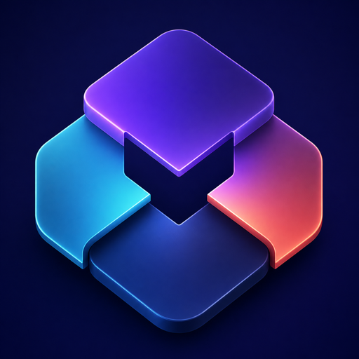
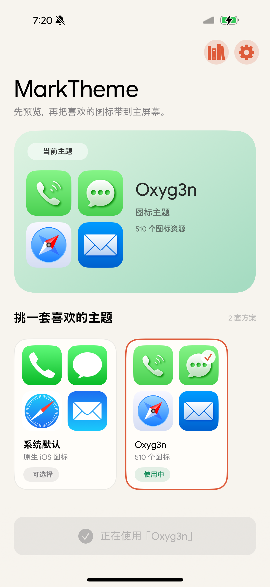
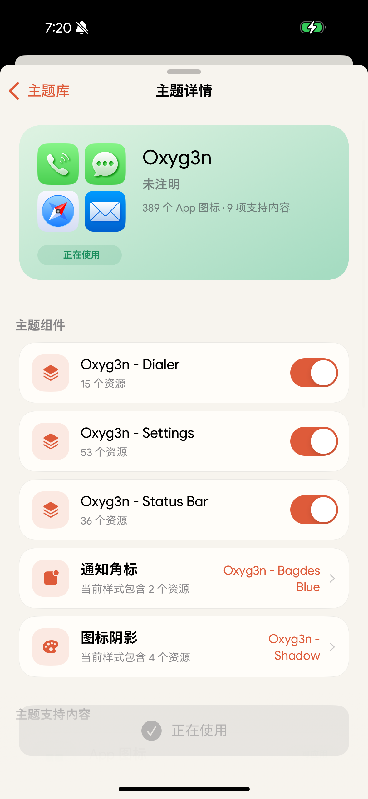

MarkTheme
先预览，再把喜欢的图标带到主屏幕。
iOS 17+
Rootless
RootHide


模块化主题管理
在 App 内导入、审阅和应用 SnowBoard / IconBundles 风格主题。解析、校验与 Generation 编译全部在管理器 App 内完成，注入进程只读取经过验证的不可变资源。
- 支持 ZIP、DEB、TAR 系归档和已展开目录
- 主题化主屏幕与通知中心图标、文件夹、角标、阴影、Spotlight、设置、电话、照片分享页、系统分享页与状态栏
- 支持作者遮罩、底图与图标 overlay，统一按“遮罩 → overlay”顺序合成
- 支持主题组件开关、样式变体和 Library revision 管理
- 身份、ABI 或资源校验失败时保留系统原生外观
安装前请注意
主题资产不完整或不兼容可能影响图标与系统界面显示。安装前请确认能够进入当前越狱的安全模式，并可通过软件包管理器移除 MarkTheme。
切换主题后需要一次 Respring。MarkTheme 不提供或分发第三方主题，请仅使用你有权安装的主题资产。
MarkTheme 0.2.1
0.2.1
- 暂时将安装下限调整为 iOS 17.0
- 桌面图标 overlay 按实际载体尺寸与 display scale 自适应，修复部分 iOS 17 版本中分享界面正常但桌面不显示的问题
- 图标 overlay 支持文件夹，并置于文件夹背景和原生小图标之上
- 诊断页提供精简的桌面 overlay 结论与计数，可一键导出 MarkTheme-Diagnostics.txt